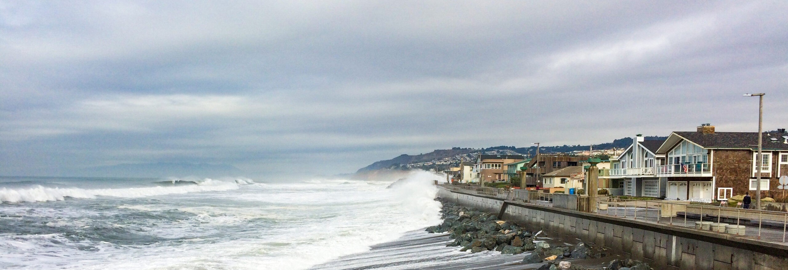

Rising seas levels represent one of the most consequential, and often overlooked, threats posed by climate change. They have the potential to not only cause widespread infrastructure damage and cost the world trillions in economic losses, but also displace billions of people globally. This project develops an econometric framework to estimate the estimated monetary costs globally under a range of IPCC SSP scenarios in the year 2100.
Currently, over 2 billion people live within 100 kilometers of the coast, and roughly 1 billion live within just 10 kilometers.

Human greenhouse gas (GHG) emissions have been accelerating global sea level rise. Global sea levels have risen approximately 0.2 m since 1900, with a significant portion occurring recently: annual sea-level rise has increased from 1.3 mm yr be- tween 1901-1971 to 3.7 mm yr between 2006-2018.
The economic impacts of sea level rise are projected to be severe. By 2100, under a high-emissions scenario (SSP5-8.5), global damages could reach $14 trillion annually, with the United States alone facing up to $1.4 trillion in yearly losses. These costs stem from increased flooding, property damage, and infrastructure loss, disproportionately affecting vulnerable com- munities and exacerbating existing inequalities. It is a reasonable assumption that eliminat- ing GHG emissions will stop any sea-level rise and its detrimental impacts on mankind. However, limiting global warming from here on out does not nec- essarily mean climate components with longer timescales of response will not continue to change. As mentioned in the 2023 UN Intergovernmental Panel on Climate Change (IPCC) Synthesis Report, "Sea level rise is unavoidable for centuries to millennia due to continuing deep ocean warming and ice sheet melt, and sea levels will remain elevated for thousands of years". Not all hope is lost, as reduced GHG emissions should limit sea level rise and its acceleration.
It should be possible to control the impacts of sea-level rise. Because of its detrimental impacts on coastal communities and its variability across different SSPs, we hope to quantify sea-level rise along four different Shared Socioeconomic Pathways created by the IPCC and their associated economic costs. These figures provide government officials and policymakers with accurate estimates of sea level rise impacts to base new adaptation strategies, laws, and resource allocations as necessary.
RQ1: Along the different Shared Socioeconomic Pathways, how much can sea level rise can we expect?
RQ2: What are the predicted economic costs for each analyzed Shared Socioeconomic Pathways in the year 2100?